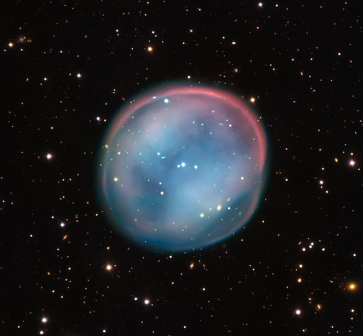
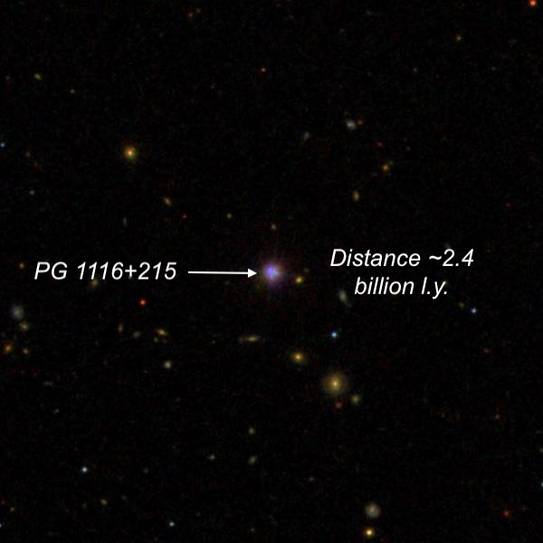
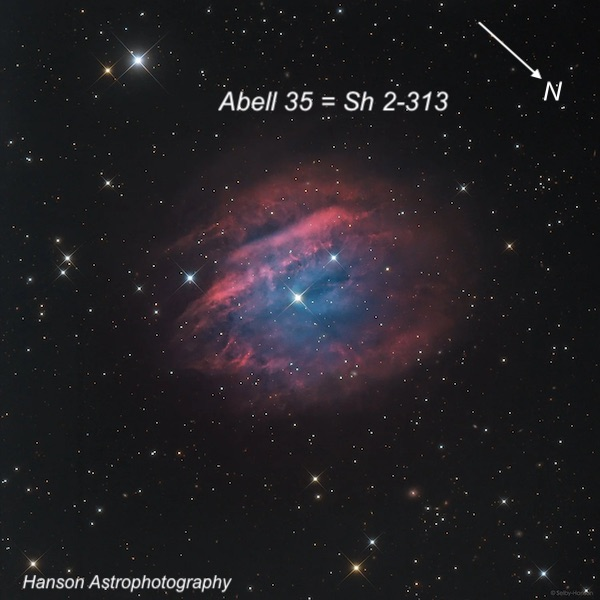
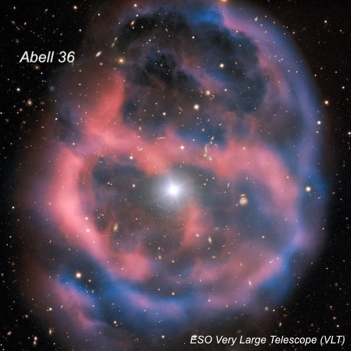
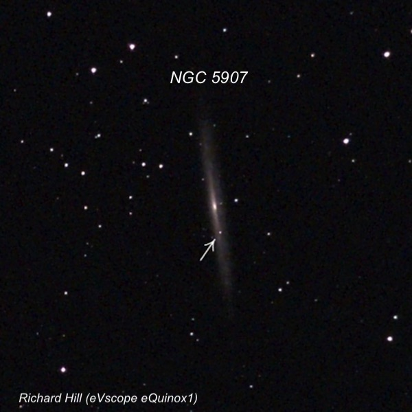
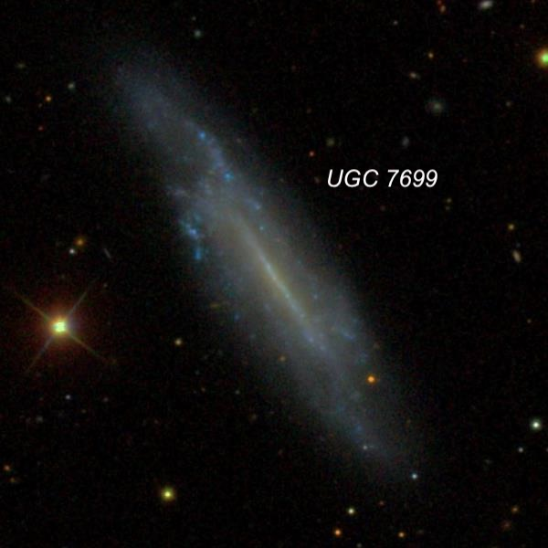

OR: Lights out at Lake Sonoma on May 9, 2026
We had quite a nice crowd enjoying the unusually pleasant and dark conditions at Lake Sonoma on Saturday night, May 9th. Observers included Jim Molinari (22" UC Obsession), Muriel Holzer (18" Classic Obsession), Ziad Khoury, Matt Marcus (C-8), Carter Scholz (16" homemade Highe design), Easswar, a couple of SFAA members whose names I can't remember, and more!
The temperature was comfortable all evening until 3:00 AM when I left (moonrise was about 2:30), there was little to no wind, completely dry conditions, and dark skies! Lately, I've recorded SQM readings in the 21.2-21.3 range at this site, though I have previously hit 21.4-21.5 on the best nights. This usually occurs when a thick marine layer blankets the towns to the south along highway 101 (Healdsburg, Windsor, Santa Rosa).
At 11:00 PM, though, Carter mentioned he was surprised to find he was hitting close to 21.5 on his SQM meter. That dark of a reading is unusual, so I dug mine out, and yep, it recorded 21.48. Looking to the south, I could see the usual, fairly prominent light dome from the cities along highway 101 (Healdsburg, Windsor, Santa Rosa) was muted and the sky transparency looked very good, so this was shaping up to be an excellent night. In fact, as the evening wore on and the Milky Way rose in the east, it seemed to get even darker and more transparent. After 1:30, Carter came over in somewhat disbelief that his last reading was over 21.6. Our devices must be calibrated very similarly as I hit 21.63, the darkest I've recorded on over 200 observing sessions at Lake Sonoma!
I brought along my 14.5" f/4.3 Starmaster (instead of my 24") and didn't follow a specific "theme" for the observations. Early on, I checked out several Spring planetary nebulae of the lesser-known variety, both with and without my night-vision device. I also had one distant quasar (over 2 billion light years) on my list and the recently discovered supernova in NGC 5907. In addition to some eye-candy Spring galaxies, I also worked on a notebook full of charts containing UGC galaxies. This 12,921 object catalog includes every galaxy north of the celestial equator with a major axis of over 1 arc minute. I'll never finish this immense list (the faint end contains 17th and 18th magnitude galaxies), but I've logged nearly 50% and continue to plow through the catalog.
Overall, it was a fun, relaxing evening and I recorded about two-dozen objects from 10:00 until 2:00. There were still several observers around at 2:15 when I started packing up and it was just before 3:00 when I exited the lot. A fat crescent hung in the southeast sky, but shortly after reaching 101, I encountered the low marine layer/fog that had turned off the light dome at our observing site.
Southern Owl Nebula = K 1-22 = PK 283+25.1
11 26 44.2 -34 22 13; Hydra
V = 12.6; Size: 188" × 174"
The Southern Owl planetary nebula was unknown until 1971 when Czech astronomer Lubos Kohoutek discovered it by simply visually scanning the first Palomar Sky Survey for low surface brightness planetaries. I'm surprised that George Abell, who had earlier found over 70 new large planetaries the same way in the 1950s, missed this object.
Jack Marling made the first known visual observation at the Tri-Valley club's dark site in late 1984 or early 1985 with a 17.5-inch and a prototype OIII filter. He called Abell 33 "a perfect "Owl Nebula" for the Southern hemisphere as it's the same size and shape as the famous M97, but about two magnitudes fainter." I've viewed this planetary several times since 1986, first with my 13.1-inch Odyssey I, and most recently with Jimi Lowrey's 48-inch Megasized dobsonian.
Although situated pretty far south in Hydra (-34.4° declination) it was easily visible in the 14.5-inch at 75x (21mm Ethos) with an OIII filter as a large, round glow with an even or nearly even surface brightness, roughly 2.5' across. Afterward sharing the view with a couple of others, I took a look with my night-vision device at 49× using a dual H-alpha + OIII filter. With this combination, the planetary was relatively bright with a pretty crisp edge nearly 3' diameter. For the remarkable similarity between the Southern Owl and the Northern Owl (M97), check out http://apod.nasa.gov/apod/ap100506.html
I decided to take a look at M97, also with the NV device and filter, but using 87x. Without knowing the orientation of the Owl's two central perforations in the eyepiece, I immediately suspected a slightly darker patch just SSE of center. Carter took a look and he confirmed the same impression. With careful viewing, we could just detect the Owl's subtle NNW "eye". The orientation was confirmed afterwards on an image that Muriel pulled up on her iPhone.

PG 1116+215 = Ton 1388 (quasar at 2.4 billion light years)
11 19 08.7 +21 19 18; Leo
V = 14.2-15.0; Size: Stellar
PG 1116+215 is a relatively bright and "nearby" quasar in western Leo, only 1.4° northeast of mag 2.6 Delta Leonis (Zosma). The designation PG1116+215 is from the 1986 Palomar-Green catalog of stellar objects with an ultraviolet excess, such as white dwarfs and quasars. Follow-up spectroscopy led to the quasar classification with a redshift of z = .176, corresponding to a Hubble flow distance of ~2.4 billion light years.
PG 1116+215 was first cataloged in the 1959 Tonantzintla Observatory Blue Stellar Objects Survey (TON 1388) with a photographic magnitude of 14.5. In the late 1990s, Hubble Space Telescope images identified the quasar host as a type E2 elliptical galaxy, but visually PG 1116+215 is stellar even in the largest amateur telescopes.
At 158×, I easily identified a 54" pair of mag 9.1/11.6 stars just 11' WSW of the quasar. A mag 13.7 star (furthest north of a trio) is 6' E and the quasar is a similar distance ENE of this star. At V ~14.7, it was immediately noticed at this power and held steadily most of the time with averted vision. It was best seen at 226x in average seeing. A few people came over to take a look in the eyepiece at this ancient point of light. It was amazing to contemplate that the light had started its long journey to reach my mirror when life on earth consisted of simple single-celled organisms.

Abell 35 = Sh 2-313 (emission nebula)
12 53 32.9 -22 52 22; Hydra
V = 13.3; Size: 938" × 636"
As opposed to the Southern Owl, the next two objects were discovered in the 1950s on the Palomar Observatory Sky Survey using the 48-inch Schmidt camera. Until fairly recently, Abell 35 was considered to be a huge, ancient PN with an unusual "bow shock" appearance (highly ionized arc of gas near the center) as it moved through the interstellar medium (ISM). The mag 9.6v central star is a binary consisting of a rapidly rotating G8 main-sequence star, which dominates the optical light, and a hot white dwarf. The distance is roughly 400 light years.
But in 2008, it was proposed that Abell 35 is most likely not a true PN, but rather an ionized Strömgren sphere (an HII region) in the ambient ISM. A follow up study in 2012 found the central star may have evolved directly from the horizontal branch to a white dwarf (WD) and the ionized gas is not its former outer envelope.
Although I've viewed this object a couple of times with my 18-inch at low power using an OIII filter, I wanted to take a look using night-vision. Using just 24× with the dual H-alpha/O III filter, Abell 35 appeared as a moderately bright, roughly oval glow around the mag 9.6 central star, up to 10' across. The glow was brighter and more extensive to the south of the central star with a slightly brighter band extending WSW-ENE to the south of the star.

Abell 36 (planetary nebula)
13 40 41.2 -19 52 57; Virgo
V = 11.8; Size: 450" × 315"
Abell 36 is a large, ancient planetary at a distance of 1500 to 2500 light years. The press release for the ESO image below states, "the ghostly glow of ESO 577-24 is only visible through a powerful telescope." That's not true as I first observed it in 1986 with my 13.1-inch scope using a UHC filter. What is unusual is the bright mag 11.8 central star and the huge halo extending up to 7.5 arc minutes across.
Using the night-vision device at 49×, again with a dual H-alpha/OIII filter, the planetary appeared as large moderately bright glow surrounding a mag ~11.5 star. The southern half has a round rim, but the northern half is nearly sliced off just N of the central star, creating a flat E-W edge. The portion of the halo further north is faintly visible as a semi-circular loop or lobe.

NGC 5907 = Splinter Galaxy with Supernova 2026kid
15 15 53.3 +56 19 44; Draco
V = 10.3; Size 12.6' × 1.4'; Surf Br = 13.3; PA = 155°
NGC 5907 is a huge, showpiece edge-on in Draco, which should be on everyone's spring observing list. I've viewed it numerous times and have picked up the thin dust lane on the western edge of the galaxy in my 18-inch and 24-inch, along with a thin low surface brightness strip on the west side of the lane. I had mentioned to Jim Molinari early in the evening that a Type II supernova (core-collapse of a single massive star) had been discovered in NGC 5907 on April 22nd, just 1.2' south-southeast of the center (NGC 5907 doesn't have a distinct nucleus). Currently, it is reported at magnitude 15.7, though it lies along the major axis of the galaxy, which detracts from viewing. He suspected seeing the supernova in his 22" UC Obsession, so I wanted to give it a try in Muriel's 18-inch Obsession.
At 294x, the supernova was strongly suspected at the south end of the bright, elongated core, just slightly further from center than a mag 14 star off the west side of center. A stellar point popped several times in this same position when the seeing was best and matched the position of the supernova on an image.

In addition to these objects, I also continued an ongoing project of observing UGC galaxies (Uppsala Galaxy Catalog) that are not in the NGC or IC, and logged another dozen of these in the 14.5". I'll highlight just one of these that missed out on gaining an IC designation.
UGC 7699 (barred spiral in Canes Venatici)
12 32 48.0 +37 37 18; CVn
V = 13.2; Size 3.6' × 1.0'; PA = 32°
UGC 7699 is a disorganized, star-forming spiral in Canes Venatici, located 3° east of NGC 4244 — an excellent edge-on spiral. Although William and John Herschel, as well as other 19th century visual observers missed this galaxy, French astronomer Stephane Javelle discovered it visually in 1909. Unfortunately, that date is a year after the publication of the second IC catalog, and the galaxy remained unknown until it was rediscovered in the 1960s on the Palomar Sky Survey.
At 226×, I found UGC 7699 moderately bright, large, very elongated 4:1 SW-NE, ~2'x1', with a slightly brighter core and an irregular surface brightness. A mag 12.5 star is 1.6' east of center (visible on this SDSS image to the left of the galaxy).
